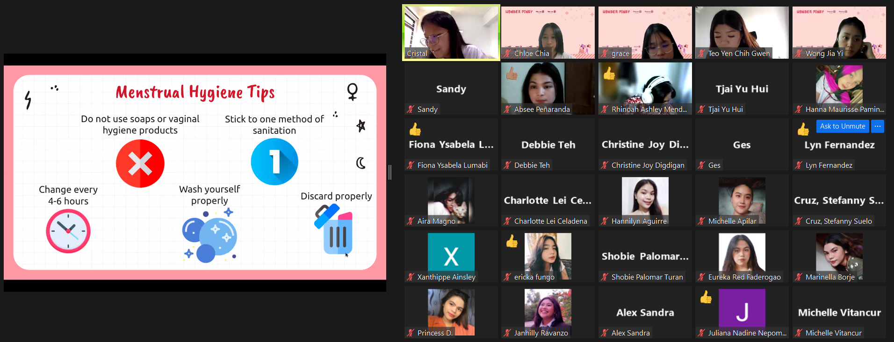
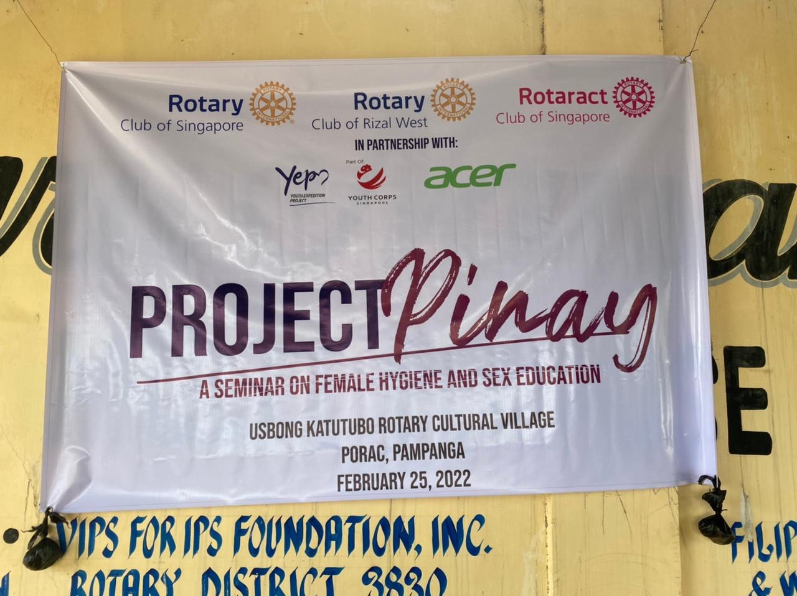
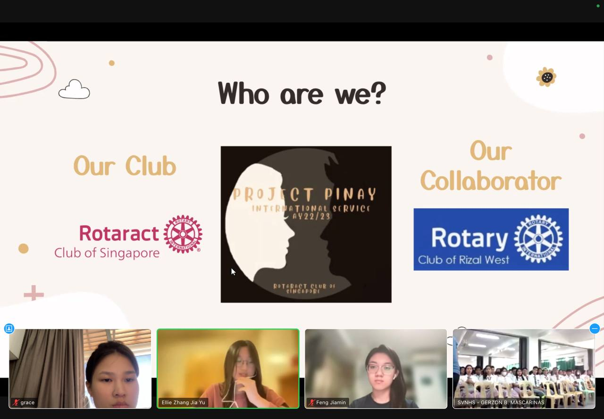

PAST RUNS
Itinatag noong 2021, ang Project Pinay ay ipinagpapatuloy ng bawat bagong koponan at kasalukuyang nasa ikalimang edisyon. Sa pamamagitan ng mga aralin at interaktibong laro, layunin nitong ipakilala ang edukasyong sekswal at pagbibinata/pagdadalaga sa isang magaan at masayang paraan, upang mas madali itong maunawaan at tanggapin ng mga kabataan.

21/22
Dito nagsimula ang lahat... ang aming unang edisyon ng proyekto!

22/23
Ang aming pangalawang edisyon, naabot ang higit 300 kabataang Pilipino :)

23/24
Ang ikatlong edisyon, swerte sa huli! Ang aming huling virtual na run.

24/25
Ang aming unang pisikal na run! Parehong oras sa susunod na taon?